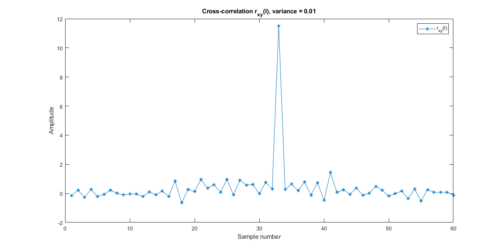

MATLAB assignment 2 - Spencer Durrant
Contents
- 1. Download data by Analysis of human behavior recognition algorithms
- 2. Let us combine the three channels into a single one, S = sqrt(x^2 + y^2 + z^2).
- 3. Implement a moving-average filter my_smoothing_filter, with a sliding window size = 3 to smooth the data.
- 4. A recursive system is defined by the following difference equation y(n) = 0.8 ∗ y(n − 1) + x(n).
- 5. Calculate and plot the value of y(n) shown below, given x(n) = x, the data signal, and an initially relaxed system. What is this system computing?
- 6. A recursive system is defined by the following difference equation y(n) = y(n − 1) − y(n − 2) + x(n).
- 7. Use folding in time and convolution to implement cross-correlation.
- 8. Time-delay estimation in radar
1. Download data by Analysis of human behavior recognition algorithms
based on acceleration data, Bruno, B. et al., IEEE Int Conf on Robotics and Automation (ICRA)
filePath = "Accelerometer-2011-03-24-10-24-39-climb_stairs-f1.txt"; data = readmatrix(filePath); g = 9.8; % Perform transform on each data point, use equation given % in the assignment details realData = -1.5*g + 3*g .* (data/63);
2. Let us combine the three channels into a single one, S = sqrt(x^2 + y^2 + z^2).
Compute the energy of the signal S.
Sraw = sqrt(sum(data.^2, 2)); S = sqrt(sum(realData.^2, 2)); fprintf("Energy of the real signal S:\n") disp(S) fprintf("Energy of the raw signal S:\n") disp(Sraw)
Energy of the real signal S:
12.9053
14.5099
12.9053
9.6629
10.9518
10.3169
10.2746
9.3654
7.6218
7.7071
7.5645
7.2709
6.8387
7.6788
7.5356
8.4614
8.8881
9.0820
8.9126
10.3591
10.6493
12.5632
13.6435
15.1127
15.3699
13.0061
8.5637
8.0119
9.7972
8.7896
8.1999
7.5932
6.7101
7.1195
7.4191
7.1501
6.8387
7.8193
7.6218
8.8636
9.5951
9.0339
9.6854
9.7303
10.1036
11.1878
12.5978
15.3131
14.5997
11.4951
10.1681
10.3591
9.1537
8.7896
8.4614
8.1199
7.6788
7.6503
7.8471
7.2409
8.2792
8.0119
9.1774
9.3187
9.3187
9.1537
10.0388
10.8117
12.6324
13.0061
14.4044
14.9242
12.5459
8.2264
6.8705
8.7399
10.5466
9.2484
8.0660
8.5127
7.4191
6.8387
6.7425
7.4191
8.2792
7.7634
8.6396
8.4614
8.7149
8.7149
9.3886
10.3169
10.6083
12.3535
14.5548
15.4969
13.9747
10.9915
10.0388
10.1681
9.7079
9.2719
8.4356
7.4191
7.7071
7.8471
7.1195
7.1195
7.6788
8.4356
8.7149
9.4579
9.9077
9.5951
10.3591
11.0704
12.2827
13.3041
14.4648
14.5997
11.5706
7.8193
8.0390
9.3886
8.8636
8.3317
8.5891
7.5067
7.5067
7.0581
7.7634
7.9299
8.1999
8.5127
8.7896
8.7896
9.2953
9.6629
10.7511
12.1401
13.2877
15.3274
13.1062
11.0113
10.1036
10.1681
9.7972
9.4579
9.1537
8.8881
8.4356
7.9846
6.8387
7.2409
7.4484
8.0660
8.2792
7.8748
9.6177
10.2746
11.4571
12.3887
13.0061
15.0115
13.2385
8.8143
6.8705
8.2792
9.1537
9.1774
8.5127
7.5645
8.3578
7.0581
7.7634
8.1466
7.6218
8.2792
7.8471
7.7071
8.5382
7.8193
8.2529
8.8390
10.5052
11.1293
11.7943
14.1912
15.3131
15.4124
11.9411
10.2534
10.8519
9.9297
9.1774
8.4356
7.5356
7.2409
6.3773
7.2709
7.2409
7.8471
8.1199
8.5891
9.3421
9.1537
9.5951
9.4809
9.1537
11.4381
12.7354
13.9279
14.8511
13.5152
9.4809
7.9846
8.7399
10.9716
8.7149
8.3578
8.5127
7.1501
7.0581
7.1501
7.4191
7.2709
7.6218
7.6218
8.7149
8.8636
8.7149
8.2792
8.7149
9.9297
12.1580
12.9894
15.9812
15.5390
13.5955
10.1895
9.7972
10.8318
10.8318
9.3654
8.7896
8.5891
7.5067
7.4484
7.2709
6.8387
6.8387
7.2409
7.4191
8.2792
9.1774
10.2108
11.0901
12.3005
13.4182
14.3286
14.9388
13.6913
9.9297
7.9573
8.7399
9.1060
8.6899
7.0581
7.1805
7.1501
Energy of the raw signal S:
51.9808
53.3010
51.9808
52.3832
49.2443
47.2969
47.9166
48.3735
48.9183
50.2494
49.5177
50.5767
50.9215
50.8527
50.1298
52.0288
52.3546
53.1037
52.9717
52.3927
52.0577
52.2015
49.7695
49.8197
50.8035
47.6760
50.8822
51.0882
49.4065
49.1732
48.0521
52.0192
52.6688
54.6717
53.6936
52.3355
53.3385
53.3667
52.0384
53.5257
52.3259
54.2402
53.0000
53.0377
52.1632
53.1695
49.7695
53.1507
51.0000
52.2781
52.8205
49.9300
46.1844
49.1732
48.9081
50.5470
50.8527
52.0577
51.5849
51.1762
51.2835
49.2037
51.9808
52.0961
52.0961
51.3517
50.8822
49.7393
49.1732
48.3322
46.8722
48.2701
47.7703
48.7237
49.6890
49.1325
47.5289
49.5580
51.7397
51.4587
53.6936
53.3385
52.6878
53.6936
53.0943
52.7352
52.1632
50.8035
52.8205
52.8205
53.9351
53.5444
52.6213
51.9711
50.9411
54.5619
53.2353
51.7784
50.8822
48.4665
48.0312
47.6340
49.5278
51.9038
50.2494
51.5849
49.8498
49.8498
50.8527
49.5278
51.0000
49.7393
49.5076
50.4876
51.7880
50.6261
50.0400
49.9800
48.2804
47.8121
46.6262
49.6991
51.7204
50.9313
50.4975
50.0799
52.1249
51.3517
51.3517
51.6720
52.7352
53.4416
52.4404
51.4587
52.8772
52.8772
53.2729
52.3832
53.3479
53.5350
51.8170
53.7587
53.9907
52.4023
47.7493
47.8121
48.7647
50.3686
51.3517
51.7494
50.1597
50.4480
50.9215
51.7880
51.3128
53.5350
54.2679
52.8110
51.7397
49.8498
45.8148
45.5522
48.3322
49.0408
51.1468
49.8297
49.6890
49.4065
48.1871
48.2079
51.4587
51.3907
50.0999
51.6720
52.7352
52.4023
52.0384
53.0943
53.3854
55.0364
54.4518
53.3667
55.3986
55.8122
54.8726
53.1131
54.3507
51.7011
53.1507
54.4518
55.0727
55.2268
53.4416
50.7839
48.2079
49.5278
50.7543
52.3927
51.8748
50.5767
51.1762
51.5849
50.5470
49.6488
50.8920
51.3517
51.1077
51.0098
51.3517
51.6140
51.1762
48.2079
48.1664
49.6085
51.6236
50.4480
49.1325
45.2659
47.8121
50.0999
51.4587
52.3355
51.6720
52.3355
53.6936
53.0094
52.0384
52.0384
52.8205
53.5257
52.8205
53.0943
52.8205
54.3783
52.9623
53.2729
60.6383
54.0370
50.3389
49.1325
49.4065
48.4768
48.4768
48.3735
48.5283
49.6488
48.1871
51.3128
50.5767
50.9215
50.9215
51.1762
52.5071
51.8941
51.9808
52.2590
51.8748
50.6853
48.1975
47.4342
49.5782
51.0784
51.4004
51.0490
49.1325
46.8188
48.4458
51.6720
52.3546
52.3355
3. Implement a moving-average filter my_smoothing_filter, with a sliding window size = 3 to smooth the data.
For your implementation first define the impulse response of the system and then use convolution (use MATLAB’s conv command). Apply this to the signals x, y, z. Plot the input signals and the resulting smoothed signals.
window_size = 3; impulse = (1/window_size) * [1, 1, 1]; disp("Using impulse response: [1, 1, 1]") x_smooth_real = conv(realData(:, 1), impulse, 'same'); y_smooth_real = conv(realData(:, 2), impulse, 'same'); z_smooth_real = conv(realData(:, 3), impulse, 'same'); x_smooth_raw = conv(data(:, 1), impulse, 'same'); y_smooth_raw = conv(data(:, 2), impulse, 'same'); z_smooth_raw = conv(data(:, 3), impulse, 'same'); % Plot both figure('Position', [100, 100, 1200, 600]); subplot(2,1,1); plot(x_smooth_real, 'LineWidth', 1.2); hold on; plot(y_smooth_real, 'LineWidth', 1.2); plot(z_smooth_real, 'LineWidth', 1.2); % Add plot info title('Moving Average Filter - Real') xlabel('Sample number'); ylabel('Amplitude'); legend('x-smooth-real', 'y-smooth-real', 'z-smooth-real'); subplot(2,1,2); plot(x_smooth_raw, 'LineWidth', 1.2); hold on; plot(y_smooth_raw, 'LineWidth', 1.2); plot(z_smooth_raw, 'LineWidth', 1.2); % Add plot info title('Moving Average Filter - Raw') xlabel('Sample number'); ylabel('Amplitude'); legend('x-smooth-raw', 'y-smooth-raw', 'z-smooth-raw');
Using impulse response: [1, 1, 1]
4. A recursive system is defined by the following difference equation y(n) = 0.8 ∗ y(n − 1) + x(n).
Calculate and plot the value of y(n), given x(n) = x, the data signal, and an initially relaxed system.
x_raw = data(:,1); x_real = realData(:,1); % Initialize arrays, relaxed at 0 y_real = zeros(size(x_real)); y_raw = zeros(size(x_raw)); % Start at 2, so n - 1 is valid for n = 2:length(x_real) y_real(n) = 0.8 * y_real(n-1) + x_real(n); y_raw(n) = 0.8 * y_raw(n-1) + x_raw(n); end % Plot both real and raw figure('Position', [100, 100, 1200, 600]); % Real plot subplot(2,1,1); plot(y_real, 'LineWidth', 1.2); % Add plot info title('Recursive system part 4 - real') xlabel('Sample number'); ylabel('Amplitude'); legend('y(n), real'); % Raw plot subplot(2,1,2); plot(y_raw, 'LineWidth', 1.2); % Add plot info title('Recursive system part 4 - raw') xlabel('Sample number'); ylabel('Amplitude'); legend('y(n), raw');
5. Calculate and plot the value of y(n) shown below, given x(n) = x, the data signal, and an initially relaxed system. What is this system computing?
Recursive system is defined: y(n) = (n/(n+1))y(n-1) + (1/(n+1))x(n)
% Initialize arrays, relaxed at 0 y_real = zeros(size(x_real)); y_raw = zeros(size(x_raw)); % Start at 2, so n - 1 is valid for n = 2:length(x_real) y_real(n) = (n/(n+1)) * y_real(n-1) + (1/(n+1)) * x_real(n); y_raw(n) = (n/(n+1)) * y_raw(n-1) + (1/(n+1)) * x_raw(n); end % Plot both real and raw figure('Position', [100, 100, 1200, 600]); % Real plot subplot(2,1,1); plot(y_real, 'LineWidth', 1.2); % Add plot info title('Recursive system part 5 - real') xlabel('Sample number'); ylabel('Amplitude'); legend('y(n), real'); % Raw plot subplot(2,1,2); plot(y_raw, 'LineWidth', 1.2); % Add plot info title('Recursive system part 5 - raw') xlabel('Sample number'); ylabel('Amplitude'); legend('y(n), raw'); disp("What is this system computing? The system is computing a dampened or attenuated signal, that may be stabilizing over time.")
What is this system computing? The system is computing a dampened or attenuated signal, that may be stabilizing over time.
6. A recursive system is defined by the following difference equation y(n) = y(n − 1) − y(n − 2) + x(n).
Calculate and plot the value of y(n), given x(n) = x, the data signal, and an initially relaxed system. Is this a linear and/or a time-invariant system? Test using input/output signals pairs.
% Initialize arrays, relaxed at 0 y_real = zeros(size(x_real)); y_raw = zeros(size(x_raw)); % Start at 3, so n - 1 and n - 2 is valid for n = 3:length(x_real) y_real(n) = y_real(n - 1) - y_real(n - 2) + x_real(n); y_raw(n) = y_raw(n - 1) - y_raw(n - 2) + x_raw(n); end % Plot both real and raw figure('Position', [100, 100, 1200, 600]); % Real plot subplot(2,1,1); plot(y_real, 'LineWidth', 1.2); % Add plot info title('Recursive system part 6 - real') xlabel('Sample number'); ylabel('Amplitude'); legend('y(n), real'); % Raw plot subplot(2,1,2); plot(y_raw, 'LineWidth', 1.2); % Add plot info title('Recursive system part 6 - raw') xlabel('Sample number'); ylabel('Amplitude'); legend('y(n), raw'); % TODO - prove linearity % The code below applies different inputs and compares the output sums y_real = zeros(size(x_real)); y_raw = zeros(size(x_raw)); % Start at time shifted value of n = 100 for n = 100:length(x_real) y_real(n) = y_real(n - 1) - y_real(n - 2) + x_real(n); y_raw(n) = y_raw(n - 1) - y_raw(n - 2) + x_raw(n); end figure('Position', [100, 100, 1200, 600]); % Real plot subplot(2,1,1); plot(y_real, 'LineWidth', 1.2); % Add plot info title('Recursive system part 6 Time Shifted - real') xlabel('Sample number'); ylabel('Amplitude'); legend('y(n), real'); % Raw plot subplot(2,1,2); plot(y_raw, 'LineWidth', 1.2); % Add plot info title('Recursive system part 6 Time Shifted - raw') xlabel('Sample number'); ylabel('Amplitude'); legend('y(n), raw'); disp("Therefore the system is linear") % The code below shifts the input signal to simulate a time shifted system y_real = zeros(size(x_real)); y_raw = zeros(size(x_raw)); % Start at time shifted value of n = 100 for n = 100:length(x_real) y_real(n) = y_real(n - 1) - y_real(n - 2) + x_real(n); y_raw(n) = y_raw(n - 1) - y_raw(n - 2) + x_raw(n); end figure('Position', [100, 100, 1200, 600]); % Real plot subplot(2,1,1); plot(y_real, 'LineWidth', 1.2); % Add plot info title('Recursive system part 6 Time Shifted - real') xlabel('Sample number'); ylabel('Amplitude'); legend('y(n), real'); % Raw plot subplot(2,1,2); plot(y_raw, 'LineWidth', 1.2); % Add plot info title('Recursive system part 6 Time Shifted - raw') xlabel('Sample number'); ylabel('Amplitude'); legend('y(n), raw'); disp("In the time shifted plots compared to the original, it is clear to see that the output shifts in the same way as the input. Therefore the system is Time-invariant.") % TODO how to test with I/O signal pairs???
Therefore the system is linear In the time shifted plots compared to the original, it is clear to see that the output shifts in the same way as the input. Therefore the system is Time-invariant.

7. Use folding in time and convolution to implement cross-correlation.
Plot the cross-correlation between the different data signals, i.e. r_xy, r_yz, r_xz
x_real = realData(:, 1); y_real = realData(:, 2); z_real = realData(:, 3); x_raw = data(:, 1); y_raw = data(:, 2); z_raw = data(:, 3); r_xy_real = conv(x_real, fliplr(y_real)); r_yz_real = conv(y_real, fliplr(z_real)); r_xz_real = conv(x_real, fliplr(z_real)); figure('Position', [100, 100, 1200, 600]); plot(-269:269, r_xy_real, 'LineWidth', 1.2); hold on; plot(-269:269, r_yz_real, 'LineWidth', 1.2); plot(-269:269, r_xz_real, 'LineWidth', 1.2); title('Cross-correlations real') xlabel('Convoluted Sample number'); ylabel('Amplitude'); legend('r-xy-real', 'r-yz-real', 'r-xz-real'); r_xy_raw = conv(x_raw, fliplr(y_raw)); r_yz_raw = conv(y_raw, fliplr(z_raw)); r_xz_raw = conv(x_raw, fliplr(z_raw)); figure('Position', [100, 100, 1200, 600]); plot(-269:269, r_xy_raw, 'LineWidth', 1.2); hold on; plot(-269:269, r_yz_raw, 'LineWidth', 1.2); plot(-269:269, r_xz_raw, 'LineWidth', 1.2); title('Cross-correlations raw') xlabel('Convoluted Sample number'); ylabel('Amplitude'); legend('r-xy-raw', 'r-yz-raw', 'r-xz-raw');

8. Time-delay estimation in radar
a) Explain how we can measure the delay D by computing the crosscorrelation r_xy(l).
disp("The peak of the cross correlation, r_xy(l), will be the delay where D = l, but it must be properly aligned on the shifted x-axis.") % b) let x(n) be the 13-point Barker sequence and v(n) be a Gaussian random % sequence with zero mean and variance = 0.01. Write a program that % generates the sequence y(n), 0 <= n <= 199 for a = 0.9 and D = 20. Plot % the signals x(n), y(n), 0 <= n <= 199. x = [1, 1, 1, 1, 1, -1, -1, 1, 1, -1, 1 ,-1, 1]; a = 0.9; D = 20; y = zeros(200,1); variance = 0.01; sigma = sqrt(variance); y(D+1:D+length(x)) = a * x; y_noise = y + sigma * randn(200,1); figure('Position', [100, 100, 1200, 600]); subplot(2,1,1); plot(y_noise, '*-') title('Radar Signal received, variance = 0.01') xlabel('Sample number'); ylabel('Amplitude'); legend('y(n)'); subplot(2,1,2); plot(x, '*-') title('Radar Signal sent') xlabel('Sample number'); ylabel('Amplitude'); legend('x(n)'); % c) Compute and plot the crosscorrelation r_xy(l), 0 <= l <= 59. Use the % plot to estimate the value of the delay D. r_xy = conv(y_noise, fliplr(x)); figure('Position', [100, 100, 1200, 600]); plot(r_xy(1:60), '*-'); title('Cross-correlation r_{xy}(l), variance = 0.01'); xlabel('Sample number'); ylabel('Amplitude'); legend('r_{xy}(l)'); disp("The delay with gaussian noise with variance of 0.01 is about 33") % d) Repeat parts b and c for variance = 0.1 and 1 y = zeros(200,1); variance = 0.1; sigma = sqrt(variance); y(D+1:D+length(x)) = a * x; y_noise = y + sigma * randn(200,1); figure('Position', [100, 100, 1200, 600]); plot(y_noise, '*-') title('Radar Signal received, variance = 0.1') xlabel('Sample number'); ylabel('Amplitude'); legend('y(n)'); r_xy = conv(y_noise, fliplr(x)); figure('Position', [100, 100, 1200, 600]); plot(r_xy(1:60), '*-'); title('Cross-correlation r_{xy}(l), variance = 0.1'); xlabel('Sample number'); ylabel('Amplitude'); legend('r_{xy}(l)'); disp("The delay with gaussian noise with variance of 0.1 is about 33") y = zeros(200,1); variance = 1; sigma = sqrt(variance); y(D+1:D+length(x)) = a * x; y_noise = y + sigma * randn(200,1); figure('Position', [100, 100, 1200, 600]); plot(y_noise, '*-') title('Radar Signal received, variance = 1') xlabel('Sample number'); ylabel('Amplitude'); legend('y(n)'); r_xy = conv(y_noise, fliplr(x)); figure('Position', [100, 100, 1200, 600]); plot(r_xy(1:60), '*-'); title('Cross-correlation r_{xy}(l), variance = 1'); xlabel('Sample number'); ylabel('Amplitude'); legend('r_{xy}(l)'); disp("The delay with gaussian noise with variance of 1 is about 33. However, sometimes the cross correlation plot with this much noise will not show an obvious peak.")
The peak of the cross correlation, r_xy(l), will be the delay where D = l, but it must be properly aligned on the shifted x-axis. The delay with gaussian noise with variance of 0.01 is about 33 The delay with gaussian noise with variance of 0.1 is about 33 The delay with gaussian noise with variance of 1 is about 33. However, sometimes the cross correlation plot with this much noise will not show an obvious peak.